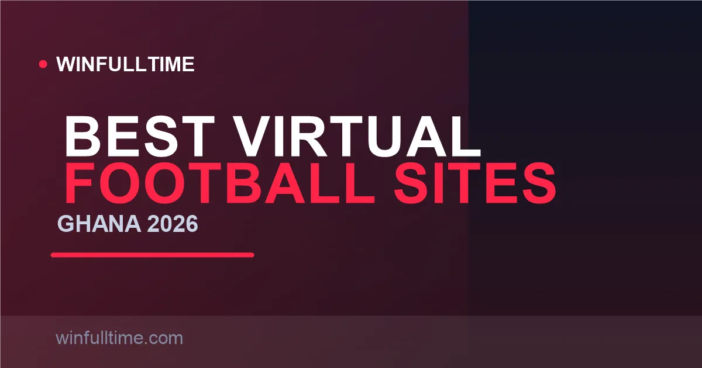

Best Virtual Football Betting Sites in Ghana 2026: Played in Minutes

When every real league match is finished and you still want action, virtual football is a 24/7 answer. Ghanaian bookmakers now run full virtual leagues — including a Ghanaian-flavoured Akwaaba League at Betika — that resolve in minutes from stakes as low as GHS 0.50. Here are the best virtual football platforms in Ghana for 2026, and the RNG truth behind them.

Virtual Football in Ghana at a Glance
Virtual sports have grown from a niche into a mainstream product for Ghanaian bettors, largely because the Ghanaian Premier League and European fixtures don't run 24/7 — but virtual leagues do. Each bookmaker renders simulated matches with real-looking team names, tables and 1-X-2 markets, and a new event starts every couple of minutes.
| Site | Virtual Football Leagues | Min Stake | Cadence | Extras |
|---|---|---|---|---|
| Betika | English, Akwaaba, Bundesliga, Italy, Super League | GHS 0.50 | Minutes | Keno Deluxe |
| 1xBet | 50+ virtual products | ~GHS 1 | Matches every ~5 min | Virtual cash out |
| Betway | Football, Horse, Tennis, Basketball, Dog racing | ~GHS 1 | 24/7 | ~100 games |
Verified August 2026. Virtual product ranges and stakes change without notice — confirm on the site.
The RNG Truth You Need to Know
Here is the single most important thing about virtual football: every outcome is decided by a random number generator (RNG). There is no real team form, no injury news and no manager tactics to analyse. What looks like a "league table" and "form guide" is purely cosmetic — it has no causal relationship with the next simulated result.
That changes how you should bet. With real football you gain an edge from research; with virtuals there is no information edge to find. This means the house advantage is decided entirely by the odds maths, and the most rational approach is small stakes and low-frequency play. Treat virtuals as fast entertainment, not as a system you can beat.
1. Betika Best for Ghanaian Fans
Betika is the most locally tuned virtual product in Ghana. Its virtual section offers the English League, the Virtual Bundesliga and the Ghanaian-flavoured Akwaaba League, plus the Betika Super League, Italy League and a Keno-style number game. Rounds finish in minutes, so you get near-constant action with markets like total goals and double chance on every match.
Betika's virtual minimum single bet is around GHS 0.50, and its GHS 1 minimum deposit via MTN MoMo, Telecel Cash or AT Money makes starting effectively free. The provider-licensed product runs under Betika's GCG sports licence (GCSB25L2020H), and the familiar Betika app, Lite site and USSD *263# line make virtual play possible even on a data-light or basic phone.
Pros
- Ghanaian-themed Akwaaba League
- Very low minimum stake
- Fast rounds, constant action
- Plays on basic phones via USSD
Cons
- Fewer virtual products than 1xBet
- No virtual cash out
- Standard promos may not apply to virtuals
Verdict: The best Ghanaian-first virtual football experience, with a league built for local bettors and a rock-bottom entry cost.
2. 1xBet Most Virtual Products
1xBet hosts the largest virtual catalogue in Ghana — 50+ virtual products powered by top providers including Golden Race, Global Bet, Leap, NSoft, Kiron Interactive and Betradar. That spans virtual football matches and leagues, horse racing, greyhounds, motorbike racing and more. Virtual football matches run roughly every five minutes, each lasting around 90 seconds, with horse races every two to five minutes.
What makes 1xBet stand apart is virtual cash out— the ability to settle your virtual stake early mid-event rather than riding the result out — plus promo codes that can be applied to virtual events. With a GHS 1 minimum deposit and 1xBet's sharp odds, it's the deepest playground for virtual players who want maximum variety in one account.
Pros
- Largest virtual catalogue in Ghana
- Unique virtual cash out
- Frequent, fast events
- Low GHS 1 funding floor
Cons
- Cluttered, dense interface
- Heavy data usage
- Lack of realism in low-end games
Verdict: The pick for variety-hunters who want more virtual products and cash out than anywhere else in Ghana.
3. Betway Premium 24/7 Suite
Betway Ghana runs a polished, 24/7 virtual sports suite broken into around ten sections — Soccer, Instant Virtuals, Basketball, Tennis, Racing, Motor Racing and more — hosting up to a hundred games from providers like Kiron, Leap, Betgames Sport, Betradar, Golden Race and Global Bet. Products include the Virtual Football League, Virtual Horse Classics, Virtual Basketball League, Virtual Tennis Open and Virtual Dog Races.
Every match gets the same clear stats and live visuals as real football, and bets slot straight into your bet slip. Betway pairs this with its famous data-free app on MTN and Telecel SIMs, so you can run virtual football without burning your data bundle — a genuine edge for a 24/7 product you might otherwise chew through data with.
Pros
- Premium, polished virtual visuals
- Data-free app for 24/7 play
- Wide range of virtual sports
- Established GCG-licensed brand
Cons
- Fewer football-specific products than 1xBet
- Higher minimum withdrawal than some rivals
- Welcome bonus needs 10x playthrough
Verdict: The most polished all-round virtual sports experience, and the one that costs nothing in data to keep running.
Virtual Football Comparison Table
| Operator | Virtual Football | Min Stake | Cash Out | Best For |
|---|---|---|---|---|
| Betika | English / Akwaaba / Bundesliga / Italy | GHS 0.50 | No | Ghanaian fans, low stakes |
| 1xBet | 50+ virtual products | ~GHS 1 | Yes | Maximum variety |
| Betway | 24/7 virtual sports suite | ~GHS 1 | No | Polished visuals, data-free |
Verified August 2026; exact stakes and products vary — confirm on the operator site.
Tip: know when virtuals don't count toward bonuses
On many operators, welcome-bonus wagering requires accumulator bets on real events, and some explicitly exclude virtual products from promotions. Check the promo terms before you stake virtual bets against a bonus, or you may find the wager doesn't count.
Virtual Football & Ghana's Tax
Virtual football winnings are treated exactly like any other sports bet in Ghana, which is to say they face no tax at all. The Ghana Revenue Authority's 10% withholding tax on betting winnings was repealed under Act 1129 effective 2 April 2025, so the full payout from a winning virtual slip lands in your Momo wallet with nothing deducted.
The practical planning point is the same as sports betting: watch per-transaction withdrawal ceilings and complete your Ghana Card KYC early, since virtual players tend to hit frequent small wins that still need a verified account to cash out smoothly.
Virtual Football Strategy Tips for Ghanaian Bettors
Tip 1: Stake small, always
Because virtual outcomes are pure RNG, no research improves your chances. Keep every virtual bet small — from the GHS 0.50 floor upward — so the fast cadence can never drain your bankroll. The house edge is decided by the odds, not by anything you can learn.
Tip 2: Prefer shorter events over parlaying lots
Multiplying several 90-second virtual matches together looks tempting but stacks independent RNG draws, lowering your chance of a full win sharply. If you play virtuals, lean on singles or short doubles and avoid deep virtual accumulators.
Tip 3: Use cash out where you can
1xBet's virtual cash out lets you lock in a smaller, safer profit mid-event instead of riding the full outcome. On RNG products where the result can swing in seconds, taking a sensible cash out is usually the smarter exit than chasing the full price.
Tip 4: Cap your session, not just your stake
The danger of virtual football is its convenience — rounds never stop. Set a fixed number of bets or a time limit per session and stop when you reach it, because a 24/7 product will happily keep letting you play.
Frequently Asked Questions
Which betting site has the best virtual football in Ghana in 2026?
Betika offers Ghanaian-flavoured virtual leagues including the English League, Akwaaba League and Virtual Bundesliga from around GHS 0.50 per bet, making it the most accessible and locally tuned option. 1xBet has the widest range with 50+ virtual products and virtual cash out, while Betway runs a polished 24/7 virtual sports suite.
Is virtual football fixed or random?
Virtual football outcomes are generated by a random number generator (RNG), not by real fixtures. There is no information edge from form or injuries, so you cannot predict results with skill in the way you can with real football. Treat it as chance-based entertainment with a small stake.
What is the minimum stake for virtual football in Ghana?
Betika's virtual games run from a minimum single bet of GHS 0.50. Combined with the GHS 1 minimum deposit across most licensed operators, you can start playing virtual football for a very small amount.
Are virtual football winnings taxed in Ghana?
No. The 10% betting winnings withholding tax was repealed effective 2 April 2025, and virtual football payouts are treated the same as any sports bet — your full win lands in your Momo wallet with nothing deducted.
Do virtual football bets count toward bonuses?
Usually only partially or not at all. On many operators, standard welcome-bonus wagering requires accumulator bets on real events, and some exclude virtual products from promo participation or set separate minimum-odds rules. Always check the promotion terms before you stake virtual bets against a bonus.
Prefer Real Football?
Compare virtual action with real-match fixtures using data-driven predictions and head-to-head analysis for Ghanaian and international games.
Last updated: 31 August 2026 | By Tochukwu Mesigo |
Build Winning Accumulator Tickets
Generate optimized accumulator combinations from today's data-driven predictions. Set your target odds and get instant ticket suggestions.
Pro Ticket Builder →